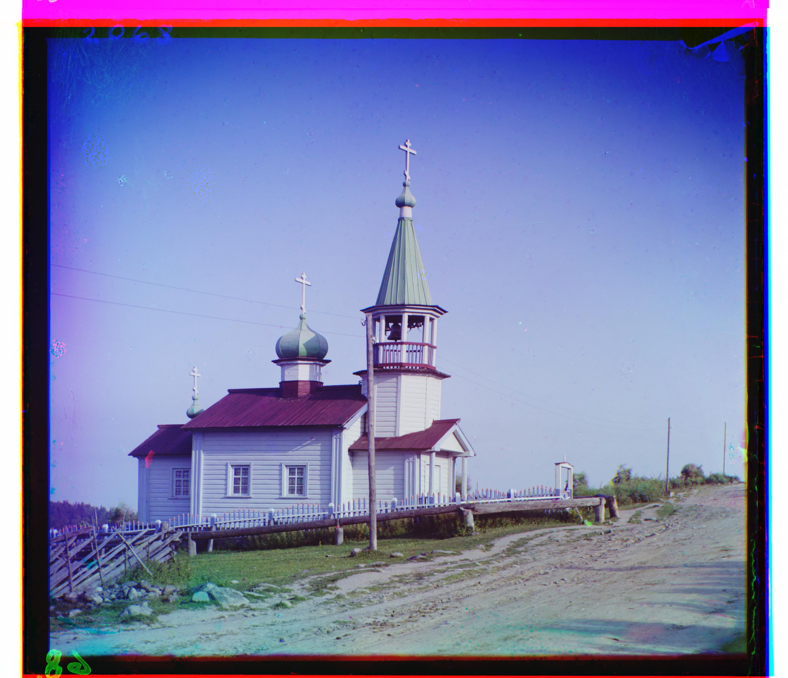
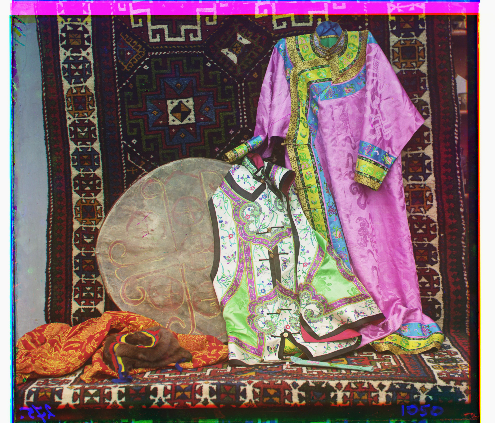
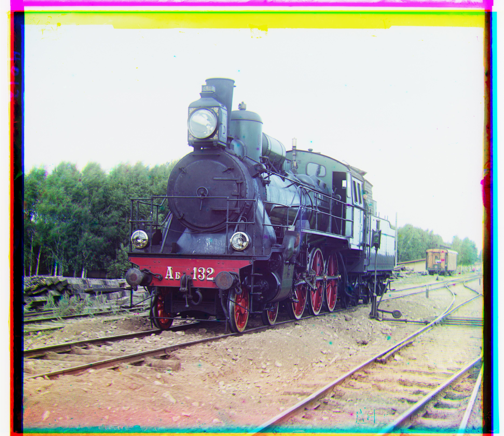
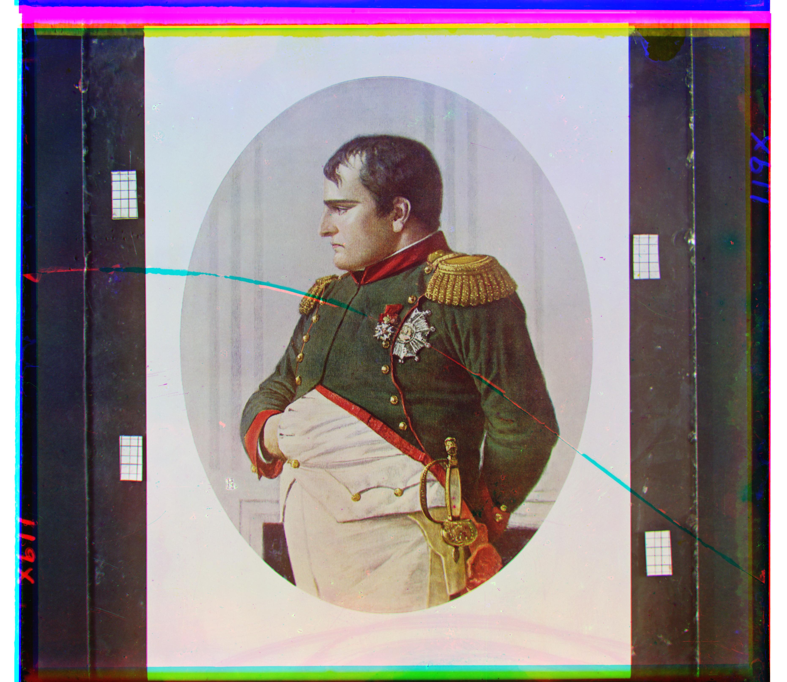

out_cathedral.jpg
green (2, 5) · red (3, 12) · 0.41s
out_monastery.jpg
green (2, -3) · red (2, 3) · 0.35s
out_tobolsk.jpg
green (3, 3) · red (3, 6) · 0.34s
Multi-Scale Pyramid Alignment
[PLACEHOLDER SECTION PYRAMID]
out_church.jpg
green (4, 25) · red (-4, 58) · 3.84s
out_harvesters.jpg
green (17, 60) · red (13, 124) · 3.65s
out_icon.jpg
green (17, 41) · red (23, 89) · 3.73s

out_ilemselga.jpg
green (7, 40) · red (11, 130) · 3.86s
out_melons.jpg
green (11, 82) · red (13, 178) · 3.61s
out_religous_painting.jpg
green (3, 28) · red (7, 68) · 4.26s
out_self_portrait.jpg
green (29, 79) · red (37, 176) · 4.27s
out_siren.jpg
green (-6, 49) · red (-25, 96) · 3.88s
out_three_generations.jpg
green (14, 53) · red (11, 112) · 3.50s
out_wharf.jpg
green (-7, 15) · red (-16, 83) · 3.75s
Failure Case: Emir of Bukhara
out_emir.jpg
green (24, 49) · red (-205, 141) · 3.66s
[PLACEHOLDER SECTION EMIR]
Additional Images from the Library of Congress
[PLACEHOLDER SECTION LIBRARY OF CONGRESS]

out_kurmy.jpg
green (-18, 25) · red (-38, 116) · 3.82s

out_train.jpg
green (6, 43) · red (32, 87) · 3.61s

out_napoleon.jpg
green (5, 63) · red (-2, 133) · 3.77s